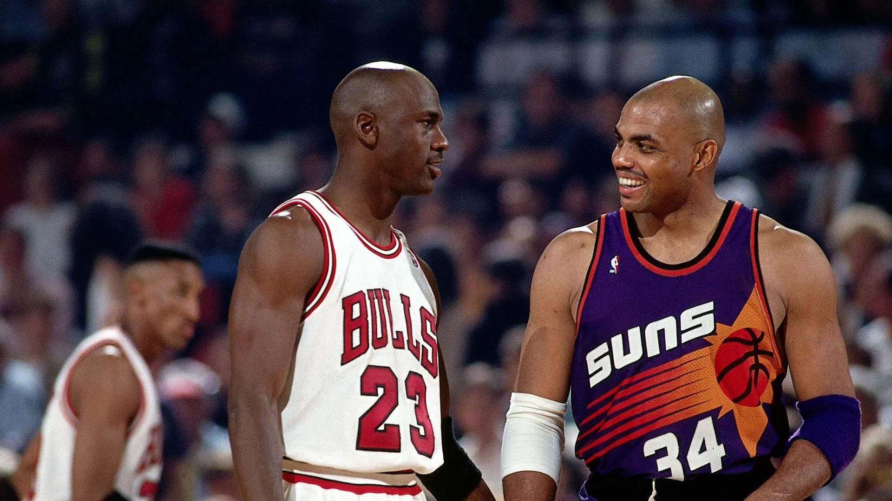

The First Three-Peat (1991–1993)
Michael Jordan's first three-peat is one of the greatest achievements in basketball history. Between 1991 and 1993, Jordan led the Chicago Bulls to three consecutive NBA Championships, establishing the Bulls as one of the NBA's dominant teams.
The Bulls won their first title in 1991 by defeating the Los Angeles Lakers. Jordan won his first NBA Championship and Finals MVP award. They successfully defended the title in 1992 by defeating the Portland Trail Blazers, with Jordan delivering several memorable performances.
In 1993, the Bulls completed the three-peat by defeating the Phoenix Suns. Jordan averaged 41 points per game during the six-game Finals series and won his third consecutive Finals MVP award.
The first three-peat helped establish Michael Jordan as one of the most important athletes of his generation. His success with the Bulls also helped increase the popularity of basketball around the world.


